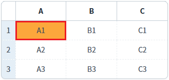
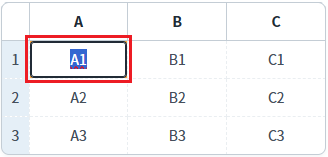
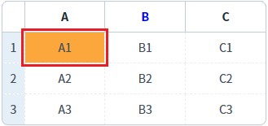
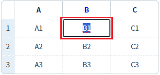
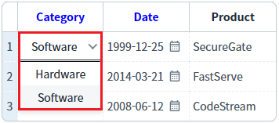
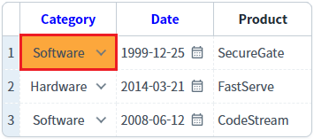
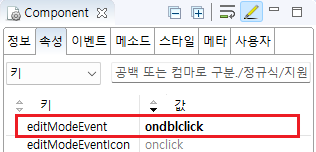
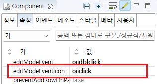

[GridView] 마우스를 이용하여 셀의 수정 모드 진입 시 적용할 이벤트 지정하기
1개요
GridView의 'editModeEvent' 속성과 'editModeEventIcon' 속성의 설정 값을 비교한 예제입니다. 두 속성은 마우스를 사용하여 셀을 수정 모드로 변경할 때 적용할 이벤트(클릭 또는 더블 클릭)를 지정하는 기능을 제공합니다.
속성별 적용 범위는 아래와 같습니다. - editModeEvent : 'viewType' 속성의 설정 값이 'icon'이 아닌 컬럼 - editModeEventIcon의 : 'viewType' 속성의 설정 값이 'icon'인 컬럼
속성은 GridView와 컬럼에 각각 설정할 수 있으며, 컬럼의 설정이 우선합니다.
본래 속성 'viewType'의 설정 값이 'icon'으로 지정된 경우 수정 모드로 진입하는 마우스 이벤트를 클릭으로 고정되어 제공되었습니다. 19년 1월 이후 하위 호환성의 문제로 'editModeEventIcon' 속성을 추가하여 마우스 이벤트를 변경하는 기능을 제공하게 되었습니다.
2구현된 기능
editModeEvent - ondblclick (기본 설정)
editModeEvent - onclick
editModeEvent - onsecondclick
editModeEvent 설정 값이 GridView와 컬럼이 다른 예시
editModeEventIcon - onclick (기본 설정)
editModeEventIcon - ondblclick
3예제 테스트 방법
3.1editModeEvent - ondblclick (기본 설정)
예제 영역 'editModeEvent - ondblclick (기본 설정)'에 구성된 GridView에서 테스트합니다.셀을 더블 클릭하면 수정 모드로 변경됩니다.
1
STEP 1: GridView의 셀을 클릭합니다.
셀이 선택됩니다.
Image 1.브라우저(Chrome) 실행 예시 - 셀을 클릭

2
STEP 2: 셀을 더블 클릭하고 실행된 결과를 확인합니다.
셀이 수정 모드로 변경됩니다.
Image 2.브라우저(Chrome) 실행 예시 - 셀 수정 모드

3.2editModeEvent - onclick
예제 영역 'editModeEvent - onclick'에 구성된 GridView에서 테스트합니다.셀을 클릭하면 수정 모드로 변경됩니다.
1
STEP 1: GridView의 셀을 클릭하고 실행된 결과를 확인합니다.
셀이 수정 모드로 변경홥니다.
Image 3.브라우저(Chrome) 실행 예시

3.3editModeEvent - onsecondclick
예제 영역 'editModeEvent - onsecondclick'에 구성된 GridView에서 테스트합니다.셀이 선택된 상태에서 클릭하면 수정 모드로 변경됩니다. 선택되지 않은 셀을 클릭하면 셀이 선택되고, 이후 동일 셀을 클릭하면 수정 모드로 변경됩니다.
1
STEP 1: GridView의 셀을 클릭합니다.
셀이 선택됩니다.
Image 4.브라우저(Chrome) 실행 예시 - 셀을 클릭

2
STEP 2: 선택된 셀을 클릭하고 실행된 결과를 확인합니다.
셀이 수정 모드로 변경됩니다.
Image 5.브라우저(Chrome) 실행 예시 - 셀 수정 모드

3.4editModeEvent 설정 값이 GridView와 컬럼이 다른 예시
예제 영역 'editModeEvent 설정 값이 GridView와 컬럼이 다른 예시'에 구성된 GridView에서 테스트합니다.GridView의 전체 설정은 셀을 더블 클릭하면 수정 모드로 변경됩니다. 단, 'B' 컬럼는 셀을 클릭하면 수정 모드로 변경됩니다.
1
STEP 1: GridView의 'A' 컬럼의 셀을 클릭합니다.
셀이 선택됩니다.
Image 6.브라우저(Chrome) 실행 예시 - 셀을 클릭

2
STEP 2: 선택한 셀을 더블 클릭하고 실행된 결과를 확인합니다.
셀이 수정 모드로 변경됩니다.
Image 7.브라우저(Chrome) 실행 예시 - 셀 수정 모드
3
STEP 3: 'B' 컬럼의 셀을 클릭하고 실행된 결과를 확인합니다.
셀이 수정 모드로 변경됩니다.
Image 8.브라우저(Chrome) 실행 예시 - 셀 수정 모드

3.5editModeEventIcon - onclick (기본 설정)
예제 영역 'editModeEventIcon - onclick (기본 설정)'에 구성된 GridView에서 테스트합니다.'Category' 컬럼과 'Date' 컬럼은 셀을 클릭하면 수정 모드로 변경됩니다. 'editModeEvent' 속성은 'ondblclick'으로 설정되어 있습니다. 'Product' 컬럼은 셀을 더블 클릭하면 수정 모드로 변경됩니다.
1
STEP 1: GridView의 'Category' 컬럼의 셀 클릭하고 실행된 결과를 확인합니다.
셀이 수정 모드로 변경됩니다.
Image 9.브라우저(Chrome) 실행 예시

3.6editModeEventIcon - ondblclick
예제 영역 'editModeEventIcon - ondblclick'에 구성된 GridView에서 테스트합니다.'Category' 컬럼과 'Date' 컬럼의 셀을 더블 클릭하면 수정 모드로 변경됩니다. 'editModeEvent' 속성은 'ondblclick'으로 설정되어 있습니다. 'Product' 컬럼은 셀을 클릭하면 수정 모드로 변경됩니다.
1
STEP 1: GridView의 'Category' 컬럼의 셀 클릭하고 실행된 결과를 확인합니다.
셀이 선택됩니다.
Image 10.브라우저(Chrome) 실행 예시

2
STEP 2: 'Category' 컬럼의 셀을 더블 클릭하고 실행된 결과를 확인합니다.
셀이 수정 모드로 변경됩니다.
Image 11.브라우저(Chrome) 실행 예시
4구현 예시
4.1editModeEvent 속성 설정하기
1
STEP 1: GridView의 속성을 정의합니다.
[필수] editModeEvent="옵션 값"
[default: ondblclick, onclick, onsecondclick] 마우스를 사용하여 셀 수정 모드로 진입할 때 사용할 이벤트.
(옵션 설명)
onclick : 셀을 클릭할 경우 수정 모드로 진입.
예시) editModeEvent="onclick"
ondblclick : 셀을 더블 클릭할 경우 수정 모드로 진입.
예시) editModeEvent="ondblclick"
onsecondclick : 셀 클릭 후 다시 클릭하면 수정 모드로 진입.
예시) editModeEvent="onsecondclick"
'editModeEvent' 속성은 GridView와 컬럼에 각각 설정할 수 있습니다.
GridView와 컬럼에 모두 설정한 경우 컬럼의 설정이 우선합니다.
Image 12.웹스퀘어 스튜디오의 Component View - 속성 설정 예시

Example 1.Source
<!-- gridView 의 소스 본문 예시 --> <w2:gridView editModeEvent="ondblclick" dataList="data:dlt_exam_1" style="height: 100px;"> <!-- 중략 --> </w2:gridView>
Example 2.Source
<!-- gridView 의 소스 본문 예시 - 컬럼에 속성을 지정 --> <w2:gridView editModeEvent="ondblclick" dataList="data:dlt_exam_2" style="height: 100px;"> <!-- 중략 --> <w2:gBody id="gBody1"> <w2:row id="row2"> <w2:column editModeEvent="onclick" inputType="text" id="price"> </w2:column> <!-- 중략 --> </w2:row> </w2:gBody> </w2:gridView>
4.2editModeEventIcon 속성 설정하기
1
STEP 1: GridView의 속성을 정의합니다.
[필수] editModeEventIcon="옵션 값"
[default: onclick, ondblclick] viewType="icon"인 컬럼에서 마우스를 사용하여 셀 수정 모드로 진입할 때 사용할 이벤트.
(옵션 설명)
onclick : 셀을 클릭할 경우 수정 모드로 진입.
예시) editModeEventIcon="onclick"
ondblclick : 셀을 더블 클릭할 경우 수정 모드로 진입.
예시) editModeEventIcon="ondblclick"
'editModeEventIcon' 속성은 GridView와 컬럼에 각각 설정할 수 있습니다.
GridView와 컬럼에 모두 설정한 경우 컬럼의 설정이 우선합니다.
Image 13.웹스퀘어 스튜디오의 Component View - 속성 설정 예시

Example 3.Source
<!-- gridView 의 소스 본문 예시 --> <w2:gridView editModeEventIcon="onclick" dataList="data:dlt_exam_1" style="height: 100px;"> <!-- 중략 --> </w2:gridView>
Example 4.Source
<!-- gridView 의 소스 본문 예시 - 컬럼에 속성을 지정 --> <w2:gridView editModeEventIcon="onclick" dataList="data:dlt_exam_2" style="height: 100px;"> <!-- 중략 --> <w2:gBody id="gBody1"> <w2:row id="row2"> <w2:column editModeEventIcon="ondblclick" viewType="icon" inputType="select" id="categoryLabel" > <!-- 중략 --> </w2:column> <!-- 중략 --> </w2:row> </w2:gBody> </w2:gridView>
5주요 API
editModeEvent
editModeEventIcon
viewType